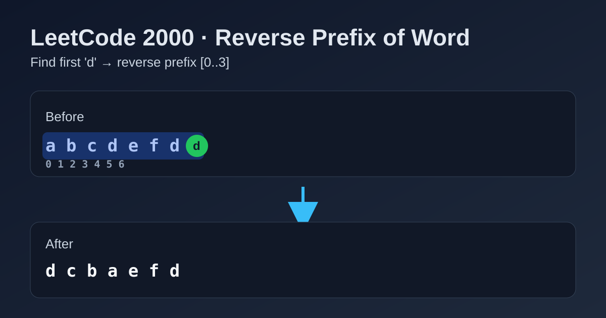

LeetCode 2000: Reverse Prefix of Word (Single Pass Pivot + In-Place Swap)
LeetCode 2000StringTwo PointersToday we solve LeetCode 2000 - Reverse Prefix of Word.
Source: https://leetcode.com/problems/reverse-prefix-of-word/

English
Problem Summary
Given a string word and a character ch, reverse the substring from index 0 to the first occurrence of ch (inclusive). If ch does not exist, return the original string.
Key Insight
Only the prefix up to the first ch matters. First locate that pivot index. Then reverse exactly that prefix with two pointers (left, right).
Algorithm (Step-by-Step)
1) Scan from left to right to find first index pivot where word[pivot] == ch.
2) If no pivot found, return word directly.
3) Convert to mutable array / char list.
4) Reverse range [0, pivot] with two-pointer swaps.
5) Build and return final string.
Complexity Analysis
Time: O(n).
Space: O(n) in languages with immutable strings (or O(1) extra if mutable in place).
Common Pitfalls
- Reversing to the last occurrence of ch instead of the first.
- Forgetting to include ch itself in the reversed range.
- Reversing the whole string by mistake.
- Ignoring the "not found" case.
Reference Implementations (Java / Go / C++ / Python / JavaScript)
class Solution {
public String reversePrefix(String word, char ch) {
int pivot = word.indexOf(ch);
if (pivot == -1) return word;
char[] arr = word.toCharArray();
int left = 0, right = pivot;
while (left < right) {
char tmp = arr[left];
arr[left] = arr[right];
arr[right] = tmp;
left++;
right--;
}
return new String(arr);
}
}func reversePrefix(word string, ch byte) string {
pivot := -1
b := []byte(word)
for i := 0; i < len(b); i++ {
if b[i] == ch {
pivot = i
break
}
}
if pivot == -1 {
return word
}
left, right := 0, pivot
for left < right {
b[left], b[right] = b[right], b[left]
left++
right--
}
return string(b)
}class Solution {
public:
string reversePrefix(string word, char ch) {
int pivot = word.find(ch);
if (pivot == string::npos) return word;
int left = 0, right = pivot;
while (left < right) {
swap(word[left], word[right]);
left++;
right--;
}
return word;
}
};class Solution:
def reversePrefix(self, word: str, ch: str) -> str:
pivot = word.find(ch)
if pivot == -1:
return word
arr = list(word)
left, right = 0, pivot
while left < right:
arr[left], arr[right] = arr[right], arr[left]
left += 1
right -= 1
return "".join(arr)/**
* @param {string} word
* @param {character} ch
* @return {string}
*/
var reversePrefix = function(word, ch) {
const pivot = word.indexOf(ch);
if (pivot === -1) return word;
const arr = word.split("");
let left = 0, right = pivot;
while (left < right) {
[arr[left], arr[right]] = [arr[right], arr[left]];
left++;
right--;
}
return arr.join("");
};中文
题目概述
给定字符串 word 和字符 ch，把从下标 0 到 ch 第一次出现位置（包含该位置）的前缀反转；如果 ch 不存在，返回原字符串。
核心思路
先找到 ch 的首次出现位置 pivot。只有区间 [0, pivot] 需要处理，再用双指针原地交换即可。
算法步骤
1）线性扫描找到首个 word[i] == ch 的位置。
2）若未找到，直接返回原字符串。
3）把字符串转成可修改数组。
4）双指针反转 [0, pivot]。
5）拼回字符串并返回。
复杂度分析
时间复杂度：O(n)。
空间复杂度：字符串不可变语言通常为 O(n)（可变场景可视为 O(1) 额外空间）。
常见陷阱
- 错把“第一次出现”写成“最后一次出现”。
- 反转时漏掉 ch 所在位置。
- 误把整串全部反转。
- 忽略 ch 不存在时应原样返回。
多语言参考实现（Java / Go / C++ / Python / JavaScript）
class Solution {
public String reversePrefix(String word, char ch) {
int pivot = word.indexOf(ch);
if (pivot == -1) return word;
char[] arr = word.toCharArray();
int left = 0, right = pivot;
while (left < right) {
char tmp = arr[left];
arr[left] = arr[right];
arr[right] = tmp;
left++;
right--;
}
return new String(arr);
}
}func reversePrefix(word string, ch byte) string {
pivot := -1
b := []byte(word)
for i := 0; i < len(b); i++ {
if b[i] == ch {
pivot = i
break
}
}
if pivot == -1 {
return word
}
left, right := 0, pivot
for left < right {
b[left], b[right] = b[right], b[left]
left++
right--
}
return string(b)
}class Solution {
public:
string reversePrefix(string word, char ch) {
int pivot = word.find(ch);
if (pivot == string::npos) return word;
int left = 0, right = pivot;
while (left < right) {
swap(word[left], word[right]);
left++;
right--;
}
return word;
}
};class Solution:
def reversePrefix(self, word: str, ch: str) -> str:
pivot = word.find(ch)
if pivot == -1:
return word
arr = list(word)
left, right = 0, pivot
while left < right:
arr[left], arr[right] = arr[right], arr[left]
left += 1
right -= 1
return "".join(arr)var reversePrefix = function(word, ch) {
const pivot = word.indexOf(ch);
if (pivot === -1) return word;
const arr = word.split("");
let left = 0, right = pivot;
while (left < right) {
[arr[left], arr[right]] = [arr[right], arr[left]];
left++;
right--;
}
return arr.join("");
};
Comments